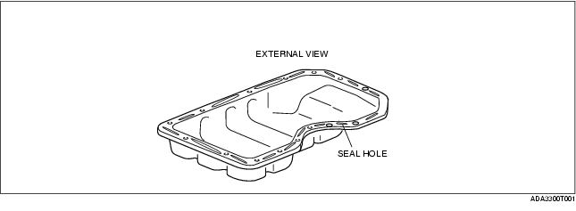

OIL PAN CONSTRUCTION [ZY]
id0111001004c0
• An cast-iron oil pan has been adopted. A silicon sealant with excellent sealing qualities has also been adopted.
• A sealing slot has been adopted to the oil pan attachment side to improve sealing performance.
